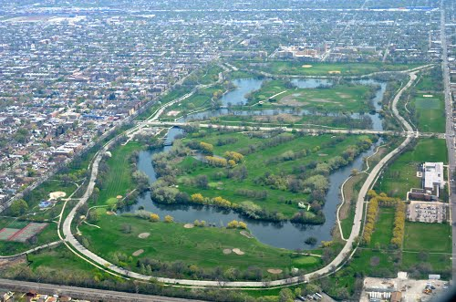

Windy City
CHICAGO

HISTORIA
O ano de 1871 é tão importante para os moradores de Chicago que eles não conseguem parar de falar nele. Em 8 de outubro daquele ano,
uma noite de domingo, o estábulo da senhora O'Leary começou a pegar fogo.
Não se sabe a razão para isso, mas a grande piada é que o coice de uma vaca derrubou um lampião e destruiu o coração de uma cidade.
Depois de um verão muito seco, o outono se seguiu com dezenas de incêndios acontecendo em toda a cidade. A especulação que se faz é de que os bombeiros estavam exaustos, já que tinham apagado um grande incêndio no dia anterior.
Já que a grande maioria das edificações era feita de madeira na época - inclusive pontes, calçadas e até ruas -, o fogo se alastrou rápido,
destruindo 5 km² da área central, deixando 300 mortos e um terço da população sem ter onde morar.
Aquela noite significou a ruína e a glória de Chicago. A cidade, que já estava em franco crescimento, ganhou ainda mais subsídios para sua reconstrução.
O que ninguém imaginava era o tamanho da ousadia de engenheiros e arquitetos,
que aproveitaram a oportunidade para criar alguns dos edifícios mais altos do mundo.
A grande novidade de Chicago foi criar prédios altíssimos,
mas ainda assim, leves. Graças a técnicas de estruturas metálicas, frutos da Revolução Industrial, que surgiam na época,
a cidade ganhou um brilho único que a colocou definitivamente no mapa turístico mundial.
O aço ganhou força na segunda metade do século 19, com a proliferação de siderurgias em diversas partes dos Estados Unidos.
A utilização desse material na construção civil mostrou-se eficiente e permitiu que se fizessem prédios com mais de 20 andares,
os grandes arranha-céus da época, sem precisar de paredes tão grossas quanto as de edifícios feitos de tijolo ou pedra.
A reconstrução de Chicago transformou a cidade em referência na arquitetura. Convidado para presidir o Instituto Tecnológico de Illinois, em 1938,
Ludwig Mies van Der Rohe deixou a Alemanha nazista e se mudou para Chicago, onde criou diversos edifícios revolucionários para a época.
Sua arquitetura "pele e osso" trouxe a Chicago prédios com mais de 50 andares com estrutura metálica como esqueleto e a pele de vidro em traços retos e simples: "Menos é mais",
dizia Van der Rohe.
A ousadia dos escritórios de engenharia e arquitetura fez com que o centro de Chicago se destacasse do restante da cidade.
Hoje, a Willis Tower, mais conhecida como Sears Tower, o prédio mais alto da cidade, com 412 metros de altura e 112 andares,
nem parece tão alto por estar cercado de outros tantos gigantes.
Futuro
138 anos depois do incêndio, Chicago continua a se reinventar. A maioria dos antigos arranha-céus foi substituída por outros ainda maiores e a cidade parece estar numa constante reconstrução. Alguns dos principais edifícios foram construídos às margens do rio Chicago, que passou por uma drástica limpeza e teve seu curso invertido no processo. Dois prédios devem modificar a paisagem local atualmente. O primeiro deles é o Trump Hotel (e condomínio residencial), de Donald Trump. A torre imponente de 92 andares aparece em destaque na famosa imagem do rio Chicago a partir do Lago Michigan. O hotel já está em funcionamento, mas as unidades residenciais estão comprometidas. Apenas 39% delas foram vendidas. O segundo prédio que deve mudar drasticamente o skyline de Chicago o faz hoje apenas por sua ausência. A Chicago Spire, projetada pelo arquiteto espanhol Santiago Calatrava, seria um edifício residencial de 140 andares e 610 metros de altura tinha a missão de se tornar o maior edifício da América do Norte, tirando o reinado da Willis Tower. As obras começaram em março de 2008. O que os investidores não contavam era que a crise imobiliária americana os atingiria em cheio. Um mês depois de iniciadas as obras da fundação, as máquinas foram retiradas e o que se vê hoje é nada mais do que um buraco, que nem é tão grande como se poderia imaginar para um prédio dessa magnitude. O futuro da obra continua incerto.
TRADIÇÕES
Quer saber o que ver em Chicago assim que chegar? As construções mais interessantes e majestosas estão no centro – área conhecida como The Loop, que engloba as zonas comerciais e financeiras. Ali, está o Willis Tower (antigo Sears Tower), com 442 metros de altura. A principal atração está no 103º andar: o Skydeck, de onde é possível ter uma visão incrível. Por ali também fica o John Hancock Center, outro prédio imenso, que também possui um observatório.
um restaurante diferente, barzinhos, galerias de arte, lojas, teatros. Programe-se para assistir a uma peça no famoso Chicago Theatre, facilmente identificável pelo letreiro vertical na fachada.
O que fazer em chicago
Grandes parques à beira de um lago que mais parece mar compõem a paisagem com prédios singulares e de uma arquitetura inovadora. Esculturas em todas as esquinas (dentro e fora dos museus) tornam-se parte da cidade e não apenas uma atração a mais. Museus com acervos que vão de dinossauros a Renoir mostram a pluralidade de Chicago, fenômeno que se repete nos variados restaurantes e opções de compras. Difícil será não se encantar rapidamente pela Wind City.

A beleza de toda a cidade é incontestável. Um fator, porém, pode alterar e muito a sua percepção sobre Chicago: o clima! Quem estiver de viagem marcada para o inverno certamente vivenciará uma realidade muito distante de quem chega no verão. Estamos falando em uma variação de 40°C entre as duas estações do ano. No verão, as praias lotam; os parques se tornam um paraíso para a prática de esportes; os barcos, com público em festa e em trajes de banho, tomam conta do Chicago River; e as bicicletas dominam a Lakefront Trail. Já no inverno, as águas do Lago Michigan congelam; os ventos fortes e constantes espantam os esportistas; os parques ganham rinques de patinação no gelo; e os museus, com ambiente climatizado, tornam-se ainda mais convidativos. Por isso, é importante ter em mente que a sua experiência em Chicago dependerá muito da questão climática (veja mais em quando ir). Alerta de clima feito, é hora de curtir tudo o que a cidade oferece. A começar pela variedade cultural. Chicago é conhecida por viver intensamente a arte, a música e o teatro. Os trabalhos de grandes artistas não se restringem apenas aos ambientes de museus e grandes salas de espetáculos. Por lá é possível ver incríveis obras de arte apenas caminhando pela rua e ainda curtir vários festivais ao ar livre. Grandiosas esculturas - como a Crown Fontain e os trabalhos contemporâneos da Boeing Galleries, ambos no Millennium Park - estão dispostas ao ar livre e em ambiente aberto para visitação 24h por dia. Assim como festivais de jazz, teatro e dança, que lotam os parques durante o verão. O livre acesso à cultura se repete com os incríveis projetos arquitetônicos que atraem turistas de todo o mundo. As obras de arte estão ao longo das calçadas, em fachadas dos mais diferentes estilos, sempre mantendo a tradição de inovação. A fama da cidade, que tem o caráter de pioneira na arquitetura mundial, nasceu de um trágico incêndio ocorrido em 1871. A destruição quase total de Chicago foi o motor para novas produções e criações. Até hoje o espírito inovador inspira os arquitetos que chegam por lá. O passeio está entre os mais famosos da cidade, e não é para menos. Você poderá escolher entre um tour de barco pelo Chicago River, um ônibus de dois andares, passeios a pé e até de metrô. Tudo acompanhado por excelentes guias que te ajudarão a entender a riqueza da arquitetura de Chicago. Uma cidade tão inspirada pelo universo das artes não poderia deixar de ter museus excelentes. O circuito começa pelo tradicional Art Institute of Chicago, com mais 300 mil peças que contam 5000 anos de história através de obras de arte de grandes nomes como: Pierre-Auguste Renoir; Edgar Degas; Vincent van Gogh; Pablo Picasso; Wassily Kandinsky e o americano Grant Wood. Não menos interessante, porém com o foco na atualidade, a cidade oferece também o Museum of Contemporary Art Chicago, onde o visitante poderá ver trabalhos de Alexander Calder, Andy Warhol, Francis Bacon, René Magritte, entre outros. Além dos museus de arte, Chicago oferece espaços que contam a história da cidade e do mundo com diferentes abordagens. É o caso do interativo Museum of Science and Industry, onde é possível participar de experiências, ver grandes máquinas e aprender com o desenvolvimento da indústria e ciência. Quem também encanta os visitantes, especialmente os pequenos, são John G. Shedd Aquarium e o Adler Planetarium. Assim como o Field Museum, onde o conhecimento é transmitido através da história natural, com incríveis reproduções de seres vivos e até um esqueleto verdadeiro de tiranossauro rex. O dinossauro, que tem nome de Sue, é o mais completo já encontrado no mundo e o queridinho dos moradores de Chicago. Aos que preferem a cultura ligada à música e ao teatro, Chicago é um excelente polo de grandes espetáculos, com teatros belíssimos e programação diversificada, como no histórico Chicago Theatre. Entretanto, o que atrai mesmo a atenção de turistas e moradores são as dezenas de pequenas casas de espetáculos que presenteiam a todos com o melhor do blues e jazz. Com poucos dólares é possível curtir shows memoráveis e intimistas. Os espaços culturais da cidade são intensamente frequentados por moradores, assim como as áreas verdes. Os parques estão por toda parte e lotam no auge do verão. Difícil resistir a um passeio de bicicleta no Grant Park; uma sessão de cinema ao ar livre no Jay Pritzker Pavilion; uma volta entre as flores do Lurie Garden; uma soneca no gramado arborizado do Lincoln Park ou um banho de sol na North Avenue Beach. Até mesmo onde não há espaço para parques, os moradores dão um jeito de curtir. Entre os grandiosos prédios do Loop, o Rio Chicago atrai o público que aproveita as águas de tom verde esmeralda para andar de caiaque, stand up paddle ou fazer uma caminhada pela Riverwalk, a mais nova área de lazer na cidade. Ah! Sim! Chicago, apesar de não estar localizada no litoral, oferece deliciosas praias de lago. É até difícil acreditar que aquela água de azul intenso do Lake Michigan, com longa faixa de areia, tão disputada durante o verão, vire uma grande placa de gelo no inverno. É importante frisar que o cenário, independente do clima, continua belíssimo. É à beira do Lago que muitos atrativos de Chicago se concentram. É o caso do Navy Pier, uma grande área de lazer que oferece restaurantes, casas de espetáculos, cinema, parque de diversões e uma enorme variedade de passeios de barco (sempre no verão). De lá também é possível se ter uma das mais belas vistas de Chicago. E se você é do tipo que gosta de ver a cidade de diferentes ângulos, Chicago será um paraíso para as fotos. Para ver do alto, corra até o John Hancock (360 Chicago) ou o Willis Tower (Skydeck Chicago). Já para um belo skyline, o melhor é a ponta do Museum Campus. E para ver de pertinho, nada como uma volta no metrô suspenso do Loop, onde todas as linhas se encontram e dão a volta em um trajeto retangular. Depois de tantos passeios, quando a fome apertar, Chicago te presenteará com uma das melhores facetas. A gastronomia local oferece delícias como a Deep Dish Pizza e o Chicago Style Dog, duas iguarias deliciosamente engordativas. É claro que os moradores não vivem só disso. As opções de restaurantes são fartas e as especialidades giram o mundo. Uma característica, no entanto, chama a atenção em vários deles. As mesas coletivas estão presentes em grande parte dos ambientes de restaurantes, o que estimula a socialização entre os clientes. Se você prefere dividir o tempo entre passeios e compras, Chicago não irá decepcionar. Uma das mais famosas avenidas locais, a Michigan Avenue, oferece treze quarteirões repletos de boas lojas. O trecho, que ganhou o nome de Magnificent Mile, lembra a 5° Avenida de Nova York. A avenida divide a fama de shopping a céu aberto com outras duas ruas: a State Street (mais popular) e a Oak Street (mais voltada para alta costura). A verdade é que em Chicago há muito mais lojas à beira da rua do que dentro de shoppings. Por isso, mantenha os olhos abertos quando estiver passeando. Quem não resiste a um outlet conta com boas alternativas por lá. O principal deles é o Fashion Outlets, com 130 lojas e fácil acesso por metrô. Outras duas opções, um pouco mais afastadas, são o Chicago Premium Outlets, com 120 marcas e o Gurnee Mills, com 200 lojas. Não se esqueça também das belas lojas dos museus, sempre cheias de produtos exclusivos. Para fechar o dia na cidade, aproveite um dos bares e pubs locais. Os moradores prezam por boa comida, bebida e música. Motivos não faltarão para brindar às belezas da Wind City. Ficou com vontade de conhecer Chicago? Acesse os posts sobre como chegar, quando ir, transportes, onde ficar, vida cultural, pontos turísticos, onde comprar, vida noturna e onde comer. Certeza que Chicago irá conquistar você!